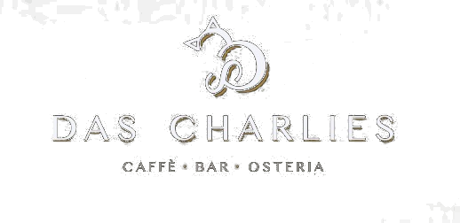
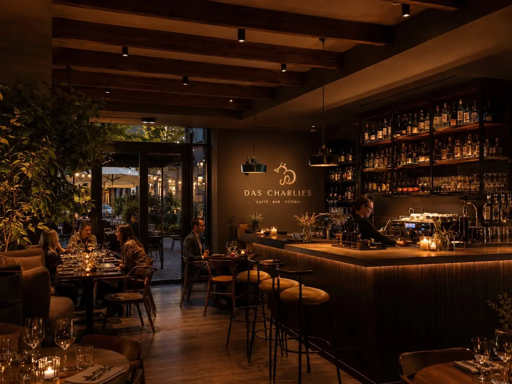
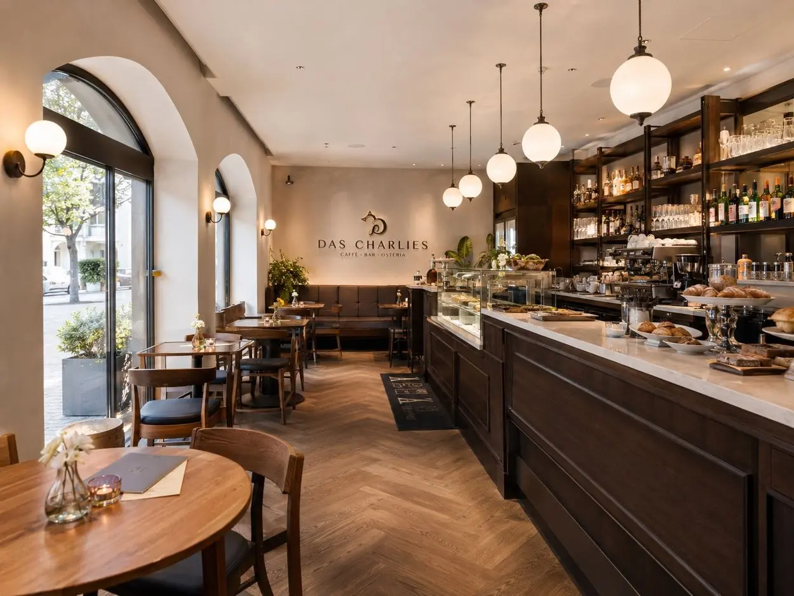
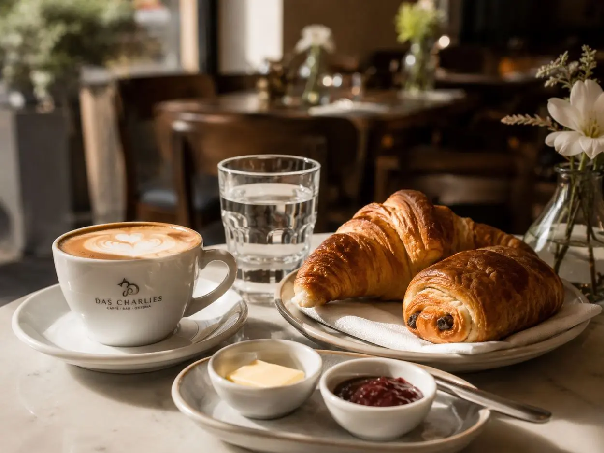
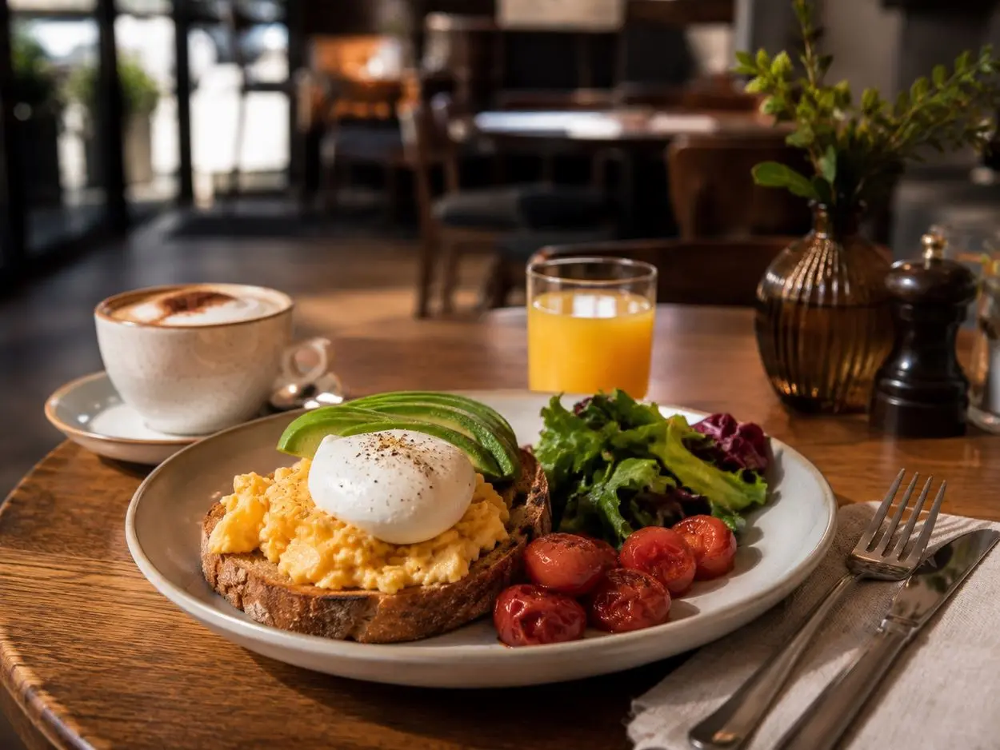
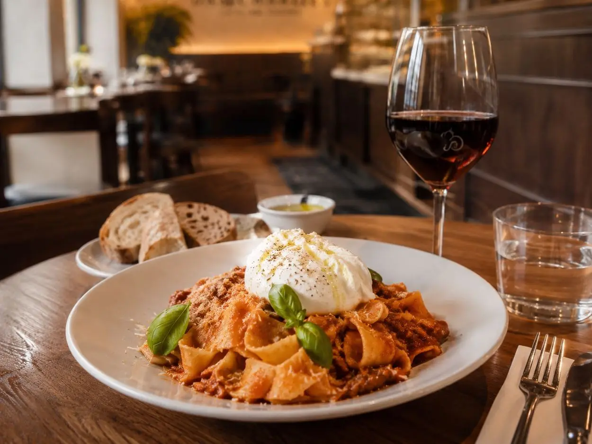
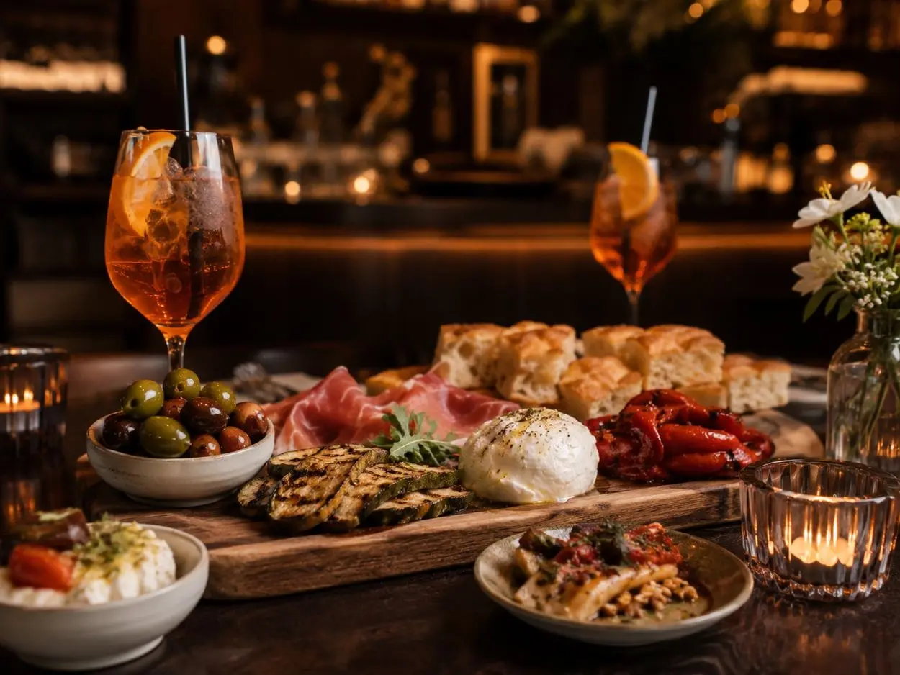
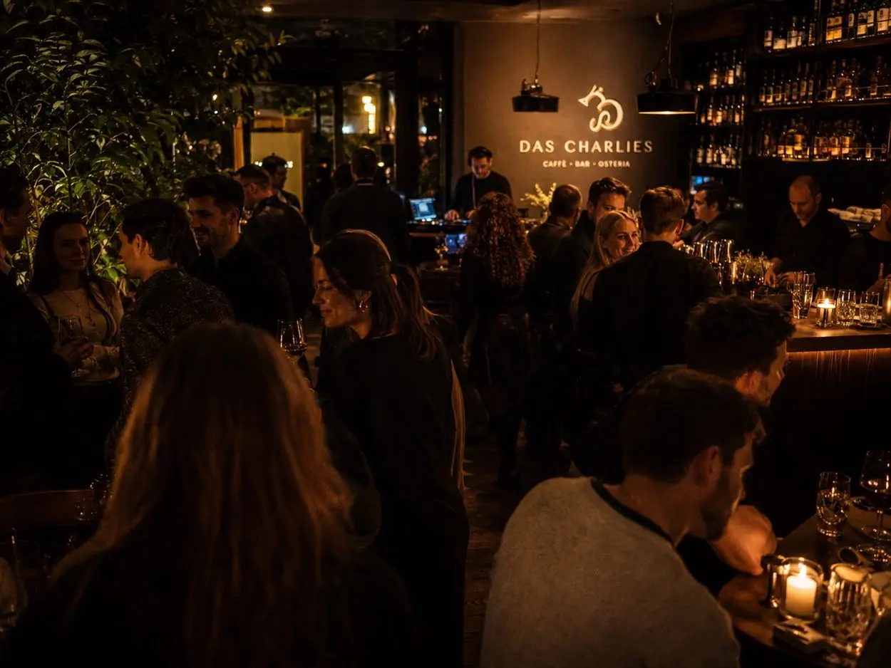
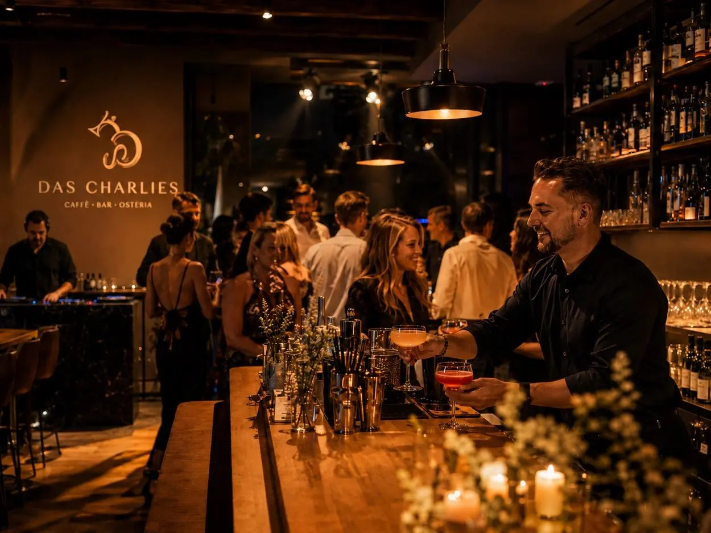
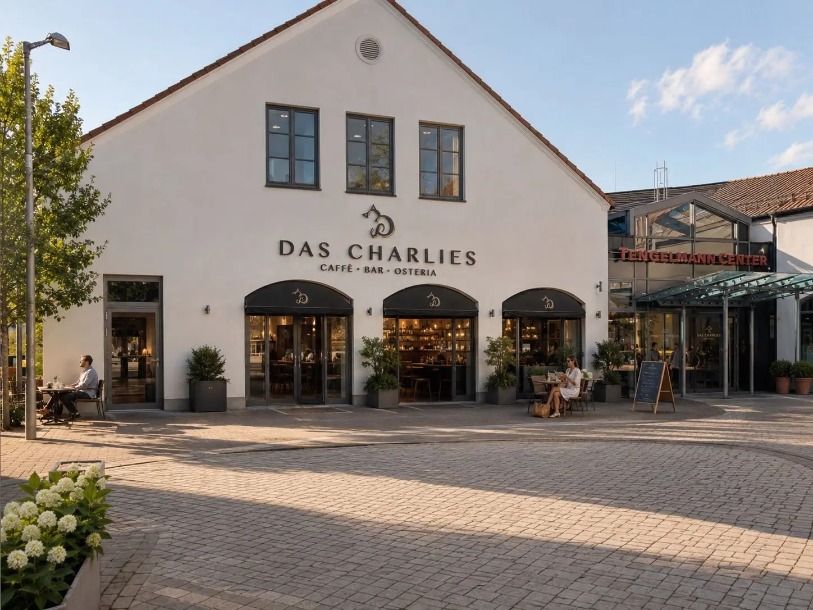

Early.
Coffee, croissants and warm breakfast plates. A quiet start before the Untermarkt truly wakes up.


Caffè · Bar · Osteria · Murnau
From the first espresso to the last glass. Italian ease in the heart of Murnau.
Reserve a tableDas Charlies
A bright start in the morning, an easy lunch and warm light in the evening. Das Charlies brings together the lightness of a café, the cooking of an osteria and the warmth of a good bar.
Charlie, a British Shorthair cat, gave the place its name – calm, independent and always where it feels comfortable.



Coffee, croissants and warm breakfast plates. A quiet start before the Untermarkt truly wakes up.
A second coffee, something savoury and no reason to leave. This is how a morning in Murnau should feel.

Pasta, salads and a lunch that stays simple – with good produce and no unnecessary fuss.

Spritz, wine and small plates. The light grows warmer, conversations longer and evening arrives naturally.

Dinner, drinks and special nights. The bar takes centre stage without losing the quiet elegance of Charlies.
Inside Charlies


When the day lasts longer
Reservations are handled directly by phone or WhatsApp. No form, no external booking service.